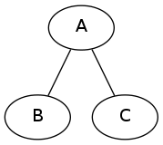
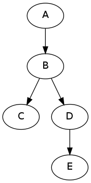
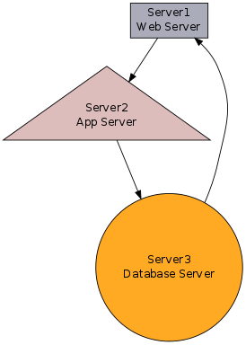
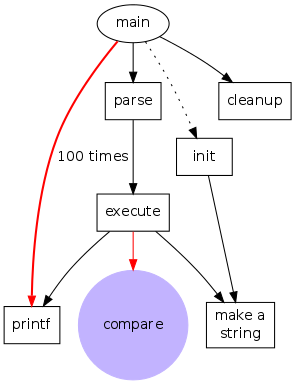
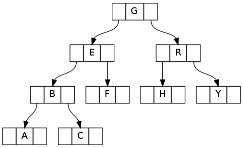

1. Graphviz工具使用
Graphviz是一个DOT语言的解析工具，同时将DOT最后输出成指定格式的文件。
学习使用Graphviz之前，首先要了解下DOT语言。
1.1. 基本无向图和有向图
-
基本无向图
graph example1 { A -- B; A -- C; }
执行命令：dot example1.dot -Tpng -o example1.png

-
基本有向图
digraph example2 { A -> B; B -> C; B -> D; D -> E; }
执行命令：dot example2.dot -Tpng -o example2.png

分析：无向图第一行用graph，结点的连接用--;而有向图第一行用digraph，结点连接用->。
1.2. 进阶
digraph example3 {
size ="4,4";
Server1 -> Server2
Server2 -> Server3
Server3 -> Server1
Server1 [shape=box, label="Server1\nWeb Server", fillcolor="#ABACBA", style=filled]
Server2 [shape=triangle, label="Server2\nApp Server", fillcolor="#DDBCBC", style=filled]
Server3 [shape=circle, label="Server3\nDatabase Server", fillcolor="#FFAA22",style=filled]
}

digraph G {
/*图片缩放比例，如果图片生成的图片较大可以设置范围*/
size ="4,4";
/*全局字体*/
fontname = "WenQuanYi Zen Hei";
fontsize=14;/*全局字体大小*/
node[shape=box];/*全局节点现状(长方形)*/
/* main节点现状为椭圆，这里相当于重写了全局现状定义 */
main [shape=ellipse];
/*这里的weight是定义边的属性，类似css中的weight*/
main -> parse [weight=8];
parse -> execute;
main -> init [style=dotted]; /*定义边的样式为虚线*/
main -> cleanup;
/*
这里定义了一个组合，可以分解为：
execute -> make_string;
execute -> printf
*/
execute -> { make_string; printf};
init -> make_string;
edge [color=red]; /*定义边的颜色，只影响后面所有边，前面边不受影响*/
main -> printf [style=bold,label="100 times"];
make_string [label="make a\nstring"];/*设置节点标签*/
node [shape=circle,style=filled,color=".7 .3 1.0"];
execute -> compare;
}

数据结构中经常用到的
digraph example4 {
node [shape = record,height=.1];
node0[label = "<f0> |<f1> G|<f2> "];
node1[label = "<f0> |<f1> E|<f2> "];
node2[label = "<f0> |<f1> B|<f2> "];
node3[label = "<f0> |<f1> F|<f2> "];
node4[label = "<f0> |<f1> R|<f2> "];
node5[label = "<f0> |<f1> H|<f2> "];
node6[label = "<f0> |<f1> Y|<f2> "];
node7[label = "<f0> |<f1> A|<f2> "];
node8[label = "<f0> |<f1> C|<f2> "];
"node0":f2 -> "node4":f1;
"node0":f0 -> "node1":f1;
"node1":f0 -> "node2":f1;
"node1":f2 -> "node3":f1;
"node2":f2 -> "node8":f1;
"node2":f0 -> "node7":f1;
"node4":f2 -> "node6":f1;
"node4":f0 -> "node5":f1;
}

write by 2014-01-02
1.3. 参考
- 使用Graphviz生成自动化系统图 http://www.ibm.com/developerworks/cn/aix/library/au-aix-graphviz/
- Graphviz工具使用(1) http://www.xiebiao.com/blog/?p=1006